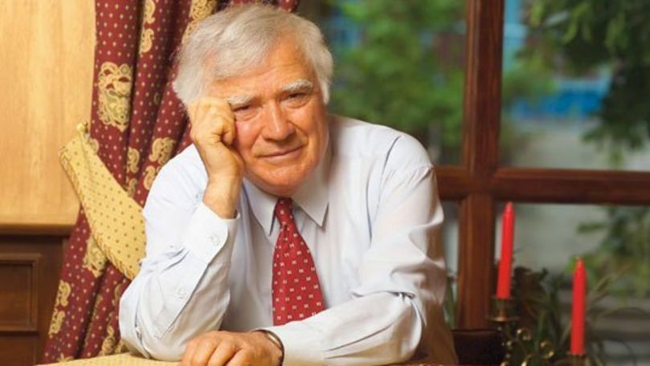
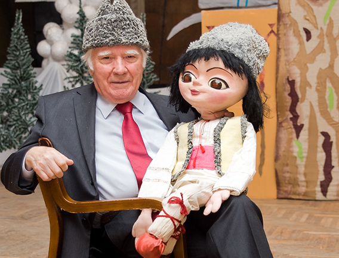
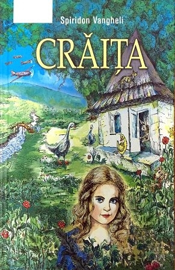
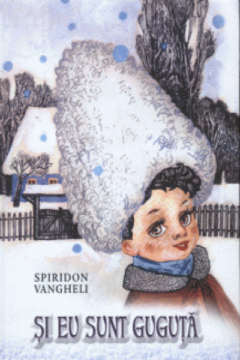
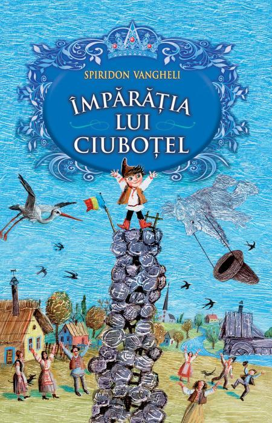
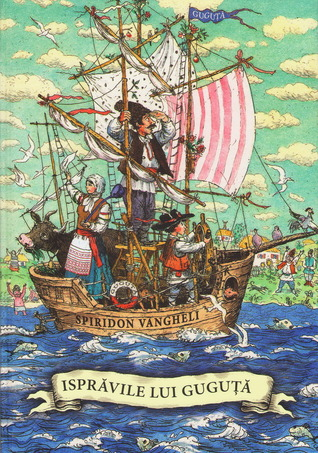

SPIRIDON VANGHELI
Date biografice
Publicatii

Prozator, poet, traducator si editor, Spiridon Vangheli este unul dintre cei mai de vaza scriitori de la noi, cunoscut prin cartile sale pentru copii pe mai multe meridiane ale lumii. S-a nascut pe 14 iunie 1932 in satul Grinauti, judetul Balti. A absolvit Scoala primara din satul natal. Clasele urmatoare le face in or. Balti si com. Pelinia. A lucrat profesor scolar, apoi redactor la editurile „Cartea Moldoveneasca” si „Lumina”.
Debuteaza in 1962 cu placheta „In tara fluturilor”, dupa care urmeaza mai multe volume: „Soarele”, „Pe lume”, „Baietelul din coliba albastra”, „Balade”, „Ispravile lui Guguta”, „Ministrul bunelului”, „Columb in Australia”, „Guguta – capitan de corabie”, „Steaua lui Ciubotel”, „Guguta si prietenii sai”, „Copii in catusele Siberiei” s.a. A tradus din poezia si proza universala pentru copii. In 2006 realizeaza un proiect de proportii „Carte de citire si gandire” pentru clasele I-IV in patru volume. Opera sa a fost tradusa in zeci de limbi, inregistrand milioane de exemplare, iar Guguta, eroul sau, este indragit atat de micul cititor, cat si de cel matur. Spiridon Vangheli a fost distins cu Diploma Internationala de Onoare „Andersen”, cu Premiul de Stat al RSSM, Premiul „Ion Creanga” al Academiei Romane, Premiul special al Uniunii Scriitorilor din Romania, cu titlul de maestru al artei si cu cel de scriitor al poporului.

Opere
- In tara fluturilor
- Soarele
- Baietelul din coliba albastra
- Balade
- Ispravile lui Guguta
- Ministrul bunelului
- Columb in Australia
- Primiti uratorii?
- Guguta-capitan de corabie
- Steaua lui Ciubotei
- Calul cu ochi albastri
- Privighetoarea
- Scrieri alese
- Ispravile lui Guguta
- Pantalonia - tara piticilor
- Baietelul din coliba albastra
- Ghiocica, povestiri, nuvele, snoave, balade, basme
- Guguta si prietenii sai
- Tatal lui Guguta cand era mic
- Copii in catusele Siberiei
- Taina inelului
De asemenea, este co-autor al unui Abecedar (impreuna cu Grigore Vieru).